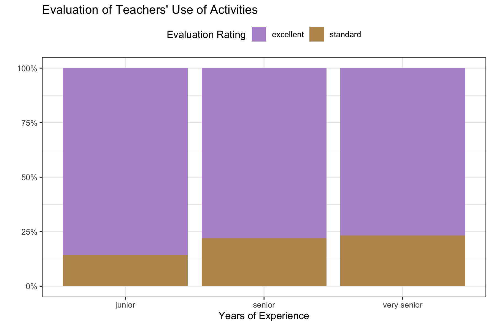

Lab 5: Student Evaluations of Teaching
In this lab, we will be using the dplyr package to explore student evaluations of teaching data. You are expected to use functions from dplyr to do your data manipulation!
Part 1: Setup
GitHub Workflow
We will use GitHub Classroom to submit Lab 5.
Step 1: Access GitHub Classroom Assignment
Click on the following link to create your repository for Lab 5: Student Evaluations of Teaching.
You will need to accept the assignment invitation by clicking the link sent to your email account associated with your GitHub account and then go to the link provided for the repository. Otherwise it will say you do not have access.
Step 2: Copy the HTTPS Link to the Repository
Find the <> Code button and select Local and then HTTPS. Copy the URL for the Repository provided

Step 3: Make a New Project in RStudio
Either under File, or in the top right corner where the current project name is, select

Step 4: Choose New Project
For now, we are simply creating a New R Project. This will generate a .Rproj file and folder of the same name to store all of our content and set our working directory.

Step 5: Choose a Version Control
Choose Version Control and then Git. Then paste the HTTPS link to the GitHub repository into the spot for Repository URL. Be sure to check that you are saving the project in the correct sub-directory on your computer. Do Not Change File Name - it should match the repository name.

Now you should be set up and ready to go!
Step 6: Add Files to your Project
Be sure to set up a GitHub repository and then use Version Control to set up your Lab 5 R Project so it is connected. Then download this week’s lab file into the folder and create a data-raw and data-clean folder and store the provided data appropriately:
- lab-5-student.qmd
- data-raw
- data-clean (you will want to save your clean data data in this folder)
You will also want to look at the Teacher Evaluations Codebook to help you understand the variables and data.
Now is a good time to commit and push your changes before you start making more edits to the lab file.
Part 2: Some Words of Advice
Part of learning to program is learning from a variety of resources. Thus, I expect you will use resources that you find on the internet. There is, however, an important balance between copying someone else’s code and using their code to learn. Therefore, if you use external resources, I want to know about it.
If you used Google, you are expected to “inform” me of any resources you used by pasting the link to the resource in a code comment next to where you used that resource.
If you used ChatGPT, you are expected to “inform” me of the assistance you received by (1) indicating somewhere in the problem that you used ChatGPT (e.g., below the question prompt or as a code comment), and (2) downloading and including the
.txtfile containing your entire conversation with ChatGPT in your repository.
Additionally, you are permitted and encouraged to work with your peers as you complete lab assignments, but you are expected to do your own work. Copying from each other is cheating, and letting people copy from you is also cheating. Please don’t do either of those things.
Setting Up Your Code Chunks
- The first chunk of your Quarto document should be to declare your libraries (probably only
tidyversefor now). - The second chunk of your Quarto document should be to load in your data.
Save Regularly, Render Often
- Be sure to save your work regularly.
- Be sure to render your file every so often, to check for errors and make sure it looks nice.
- Make sure your Quarto document does not contain
View(dataset)orinstall.packages("package"), both of these will prevent rendering. - Check your Quarto document for occasions when you looked at the data by typing the name of the data frame. Leaving these in means the whole dataset will print out and this looks unprofessional. Remove these!
- If all else fails, you can set your execution options to
error: true, which will allow the file to render even if errors are present.
- Make sure your Quarto document does not contain
Be sure you follow all style guide formatting as well as labelling code chunks and adding informative comments to your code.
Part 3: Let’s Start Working with the Data!
The Data
The teacher_evals dataset contains student evaluations of reaching (SET) collected from students at a University in Poland. There are SET surveys from students in all fields and all levels of study offered by the university. 1
The SET questionnaire that every student at this university completes is as follows:
Evaluation survey of the teaching staff of University of Poland. Please complete the following evaluation form, which aims to assess the lecturer’s performance. Only one answer should be indicated for each question. The answers are coded in the following way: 5 - I strongly agree; 4 - I agree; 3 - Neutral; 2 - I don’t agree; 1 - I strongly don’t agree.
Question 1: I learned a lot during the course.
Question 2: I think that the knowledge acquired during the course is very useful.
Question 3: The professor used activities to make the class more engaging.
Question 4: If it was possible, I would enroll for a course conducted by this lecturer again.
Question 5: The classes started on time.
Question 6: The lecturer always used time efficiently.
Question 7: The lecturer delivered the class content in an understandable and efficient way.
Question 8: The lecturer was available when we had doubts.
Question 9. The lecturer treated all students equally regardless of their race, background and ethnicity.
These data are from the end of the winter semester of the 2020-2021 academic year. In the period of data collection, all university classes were entirely online amid the COVID-19 pandemic. While expected learning outcomes were not changed, the online mode of study could have affected grading policies and could have implications for data.
Average SET scores were combined with many other variables, including:
- characteristics of the teacher (degree, seniority, gender, SET scores in the past 6 semesters).
- characteristics of the course (time of day, day of the week, course type, course breadth, class duration, class size).
- percentage of students providing SET feedback.
- course grades (mean, standard deviation, percentage failed for the current course and previous 6 semesters).
This rich dataset allows us to investigate many of the biases in student evaluations of teaching that have been reported in the literature and to formulate new hypotheses.
Before tackling the problems below, study the description of each variable included in the teacher_evals_codebook.pdf.
1. Load the appropriate R packages for your analysis.
2. Load in the teacher_evals data.
Data Inspection + Summary
3. Provide a brief overview (~4 sentences) of the dataset.
It is always good practice to start an analysis by getting a feel for the data and providing a quick summary for readers. You do not need to show any code for this question, although you probably want to use code to get some information about the data (e.g., summary(data), glimpse(data), dim(data), etc.). Things to think about – where did the data come from? what sort of data are provided (context and data type)? how much data do you have? etc.
4. What is the unit of observation (i.e. a single row in the dataset) identified by?
It is not one instructor per row! It’s also not just one class per row!
5. Use one dplyr pipeline to clean the data by:
- renaming the
gendervariablesex - removing all courses with fewer than 10 respondents
- changing data types in whichever way you see fit (e.g., is the instructor ID really a numeric data type?)
- only keeping the columns we will use –
course_id,teacher_id,question_no,no_participants,resp_share,SET_score_avg,percent_failed_cur,academic_degree,seniority, andsex
Assign your cleaned data to a new variable named teacher_evals_clean –- use these data going forward. Save the data as teacher_evals_clean.csv in the data-clean folder.
Helpful functions: rename(), mutate(), as.factor()
It would be most efficient to use across() in combination with mutate() to complete this task.
6. How many unique instructors and unique courses are present in the cleaned dataset?
Helpful functions: summarize(), n_distinct()
7. One teacher-course combination has some missing values, coded as NA. Which instructor has these missing values? Which course? What variable are the missing values in?
Helpful functions: filter(), if_any(), everything()
if_any() works similar to across() but within filter(). The structure is
filter(if_any(variable, ~function(.)))
8. What are the demographics of the instructors in this study? Investigate the variables academic_degree, seniority, and sex and summarize your findings in ~3 complete sentences.
You’ll need to first wrangle your data to have each instructor represented only once.
Helpful functions: select(), distinct(___, .keep_all = TRUE), count(), summarize()
9. Each course seems to have used a different subset of the nine evaluation questions. How many teacher-course combinations asked all nine questions?
You’ll need to first wrangle your data to find the number of questions asked within each teacher-course combination. Then there are several ways to determine the number that used all 9 questions.
Helpful functions: group_by(), n_distinct(), count(), summarize(), ungroup()
Rate my Professor
Helpful functions: filter(), group_by(), summarize(), slice()
Useful variables: question_no, teacher_id, SET_score_avg, percent_failed_cur, resp_share, academic_degree, seniority, sex
10. Which instructors had the highest and lowest average rating for Question 1 (I learned a lot during the course.) across all their courses?
11. Which instructors with one year of experience had the highest and lowest average percentage of students failing in the current semester across all their courses?
12. Which female instructors with either a doctorate or professional degree had the highest and lowest average percent of students responding to the evaluation across all their courses?
Lab 5 Submission
For Lab 5 you will submit the link to your GitHub repository. Your rendered file is required to have the following specifications in the YAML options (at the top of your document):
- have the plots embedded (
embed-resources: true) - include your source code (
code-tools: true) - include all your code and output (
echo: true)
If any of the options are not included, your Lab 5 assignment will receive an “Incomplete” and you will be required to submit a revision.
In addition, your document should not have any warnings or messages output in your document. If your contains warnings or messages, you will receive an “Incomplete” for document formatting and you will be required to submit a revision.
Challenge Instructions
Remember, challenges are not required, but they are encouraged. This challenge builds on the work you already did with the data on teacher evaluations. Specifically, you are tasked with recreating a plot, carrying out a Chi-Squared test of independence, and providing a critique of the design and collection of these data.
Accessing the Challenge
Download the template Challenge 5 Quarto file here: challenge-5-student.qmd
Be sure to save the file in the Lab 3 folder, inside your Week 3 folder, inside your STAT 331 folder!
Chi-Square Test of Independence
In case it has been a second or two since you did a Chi-Squared test, this chapter provides a friendly refresher.
Let’s compare the level of SET ratings for Question 3 (The professor used activities to make the class more engaging.) between senior instructors and junior instructors.
1. Using the original teacher_evals dataset (not teacher_evals_clean), create a new dataset that accomplishes the following with onedplyr pipeline:
- includes responses for Question 3 only
- creates a new variable called set_level that is “excellent” if the SET_score_avg is 4 or higher (inclusive) and “standard” otherwise
- creates a new variable called sen_level that is “junior’”’ if the instructor has been teaching for 4 years or less (inclusive), “senior” if between 5-8 years (inclusive), and “very senior” if more than 8 years
- contains only the variables we are interested in –-
course_id,SET_level, andsen_level - saves the mutated data into a new data frame named
teacher_evals_compare
Helpful functions: filter(), mutate(), if_else(), select()
2. Using the new dataset and your ggplot2 skills, recreate the bar plot shown below.

You should not have to do any more data manipulation to create this plot.
Helpful geometric object and arguments: geom_bar(stat = ..., position = ...)
Note that getting the general structure and reader friendly labels is the first step. Next, you need to move the legend from the right hand side of the plot to the top. Next, you get to match the colors and theme of the plot. The final step is to get the percentage labels on the y-axis.
3. Look up the documentation for chisq.test() to carry out a chi-square test of independence between the SET level and instructor seniority level in your new dataset.
Note that the chisq.test() function does not take a formula / data specification like we saw in Lab 2 with t.test(). This function requires you to extract the variables you wish to include in the analysis using a $ (e.g., evals$level).
4. Draw a conclusion about the independence of evaluation level and seniority level based on your chi-square test.
Study Critique
Part of the impetus behind this study was to investigate characteristics of a course or an instructor that might affect student evaluations of teaching that are not explicitly related to teaching effectiveness. For instance, it has been shown that gender identity and gender express affect student evaluations of teaching (an example).
5. If you were to conduct this study at Cal Poly, what are two other variables you would like to collect that you think might be related to student evaluations? These should be course or instructor characteristics that were not collected in this study.
6. Explain what effects / relationships you would expect to see for each of the two variables you outlined.
Footnotes
Citation: journal, Under blind review in refereed. University SET data, with faculty and courses characteristics. Ann Arbor, MI: Inter-university Consortium for Political and Social Research [distributor], 2021-09-12. https://doi.org/10.3886/E149801V1↩︎